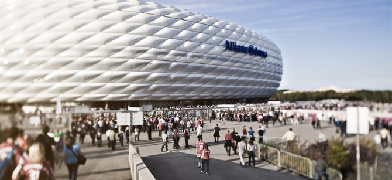
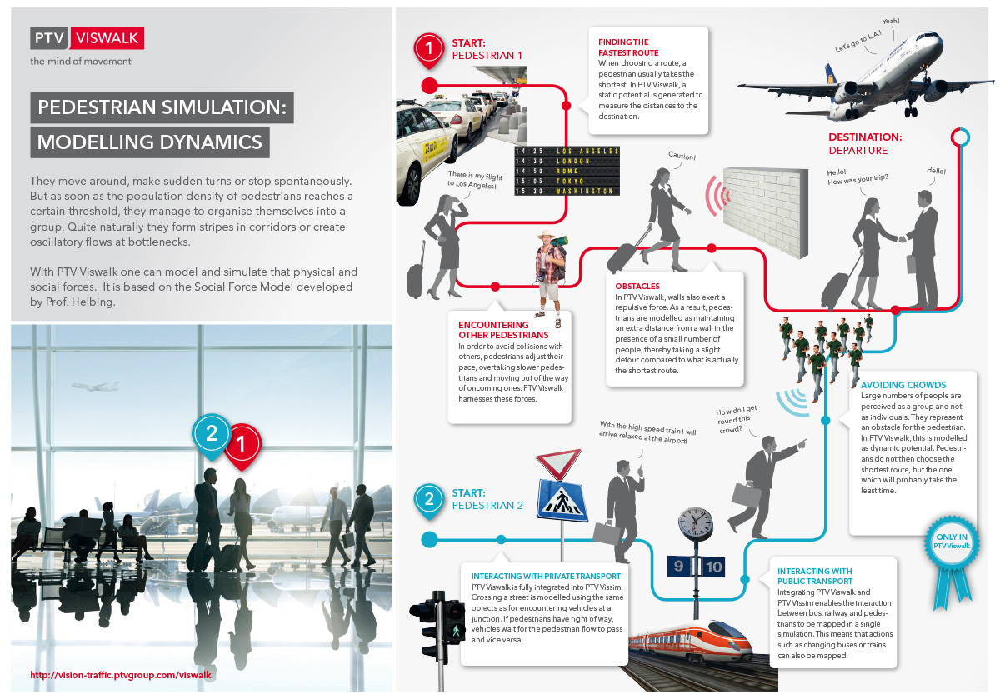
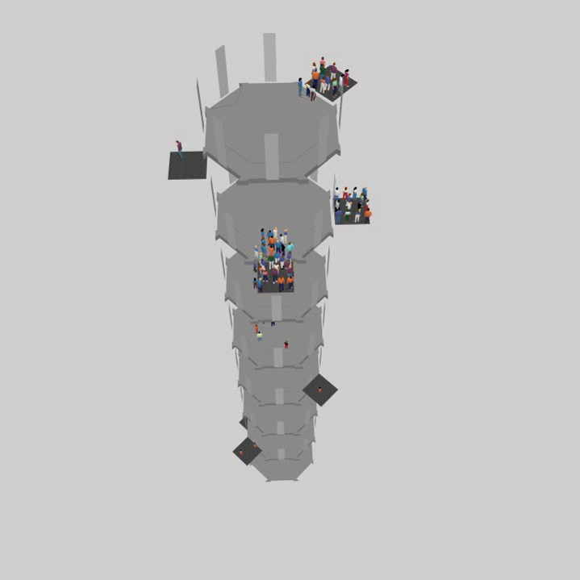
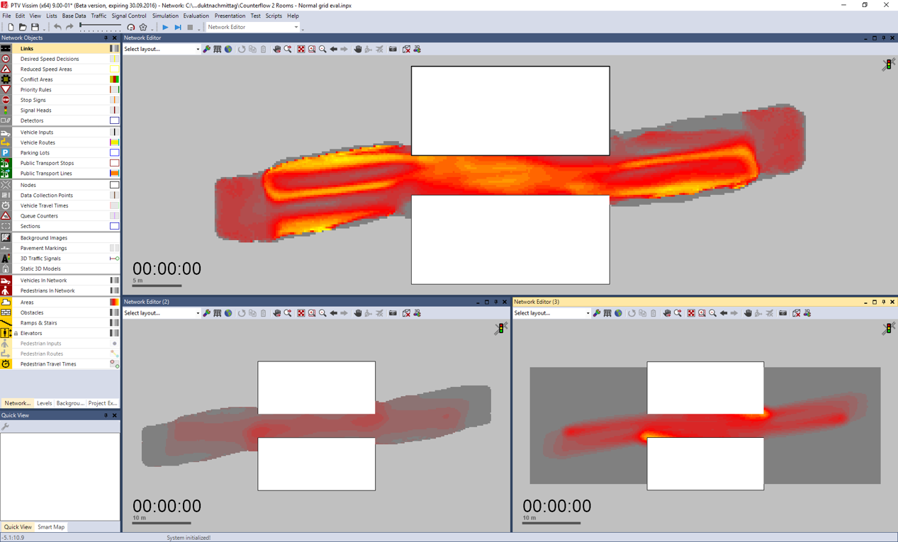

    <div id="vsebina">
    <div class="panel col-xs-12 col-sm-9 ">      
                
           
               <div class="paragraph collapse in col-xs-12 col-sm-8" id="viswalk"> 
                <h1 class="glavniNaslov">PTV Viswalk</h1> 
                  
                <p class="bodytext">PTV Viswalk omogućuje Vam simulaciju i modeliranje ljudskog pješačkog ponašanja. Planeri koriste ovaj moćni softverski alat kad god postoji potreba za simulacijom i analizom pješačkih tokova – unutar ili izvan zgrade. 
                <br><br>
                PTV Viswalk idealno je rješenje za sve one stručnjake, poput prometnih planera i konzultanata, arhitekata, upravljača velikih zgrada i velikih javnih prostora, voditelja događanja i inženjera zaštite na radu koji u svojim projektima i studijama u obzir uzimaju potrebe pješaka.  
                </p> 
                <h3>Vaše prednosti</h3>
                <ul>
                <li>Jednostavan za korištenje</li>
                <li>Realistični rezultati</li>
                <li>Modeliranje bilo kojeg broja pješaka</li>
                <li>Znanstveni pristup</li>
                <li>2D i 3D simulacije</li>
                <li>Integracija u Vision Traffic Software Suite</li>
                </ul>
                <h3>Funkcije</h3>
                <p>PTV Viswalk idealno je rješenje za sve one stručnjake, poput prometnih planera i konzultanata, arhitekata, upravljača velikih zgrada i velikih javnih prostora, voditelja događanja i inženjera zaštite na radu koji u svojim projektima i studijama u obzir uzimaju potrebe pješaka.</p>

                <h3>Grafički prikaz: Pješačka simulacija</h3>
                <a href="_slike/Infografik_PED_EN_1200P_03.jpg" target="_blank" ></a>
                
                </div>           
<!--............................................... -->
              <div class="paragraph collapse col-xs-12 col-sm-8" id="funkcije" > 
              <h1 class="podNaslov">PTV Viswalk funkcije</h1> 
              
              <h3>Grafički uređivač (GUI) omogućuje korisnicima rad sa sljedećim elementima:</h3>   
               <ul>
                 <li>Područja poput prohodnih prostora za pješake (pravokutnici, bilo kakvi poligoni)</li>
                 <li>Prepreke koje blokiraju prohodna područja za pješake (pravokutnici, kao poligoni)</li>
                 <li>CAD uvoz (DWG dokumenti) za područja i prepreke</li>
                 <li>Opcija integracije dodatnih formata kao pozadinskih slika (JPG, PNG, BMP, DXF, SHP i drugi)</li>
                 <li>Rute koje predodređuju kretanje pješaka od područja do područja</li>
                 <li>Odluke usmjerenja u kojima pješaci odabiru smjer između niza smjerova</li>
                 <li>Ulazne informacije koje u vremenskom intervalu određuju kada i koliko će pješaka ući u simulaciju </li>
                 <li>Alternativne opcije koncepata ulaznih informacija/smjerova: određivanje naredbi i smjerova korištenjem matrica destinacije (koje zavise o intervalu)</li>
                 <li>Pristup parametrima modela (Social Force Model), uključujući željene brzine</li>
                 <li>Željene brzine distribucije koje mogu biti unesene i izmijenjene u skladu s korisničkim preferencijama</li>
                 <li>Neograničeni broj razina (katova)</li>
                 <li>Rampe i stubišta koja povezuju razine</li>
                 <li>Dizala (i pokretne staze) koja povezuju dvije razine</li>
                 <li>Pokretne staze koje, slično kao dizala, ali bez razlike u visini, pokreću stajaće pješake</li>
                 <li>2D pogled i 3D pogled su osigurani već tijekom simulacije i kreacije modela. Korisnici se mogu prebacivati između dvije vrste pogleda</li>
                 <li>LOS zaslon ( prikaz razine uslužnosti)</li>
                 <li>AVI snimanje animacije – rezultati se izvoze u 3D studio Max PTV Viswalk i ponovo pokreću u PTV Viswalk</li>
                 <li>Fleksibilne opcije dizajna za područja, prepreke i modele pješaka</li>
                 <li>Mogućnost pripisivanja različitih pješačkih ponašanja pojedinim područjima (distribucija brzine i parametri)</li>           

               </ul>
               <h3>Područja mjerenja</h3>
               <ul>
                 <li>Mjerenje raznih parametara pojedinih pješaka (npr., vrijeme provedeno na području mjerenja, prosječna brzina, itd.). Vremenski prilagođene mjere</li>
                 <li>Vrijeme putovanja i mjerenje udaljenosti: "od područja A do područja B"</li>
                 <li>Podaci o čekanju i  analiza (vremenski prilagođeni)</li>
                 <li>Identifikacija prometnih zagušenja</li>
                 <li>Parcijalne rute za lokalnu redistribuciju u skladu s implicitno ili eksplicitno određenom matricom polazište – odredište</li>
                 <li>Dinamički potencijal: izračun željenih smjerova na temelju procijenjenog preostalog vremena putovanja (suprotno izračunu željenog smjera na temelju najkraće udaljenosti). "Jednopotezna naredba"</li>
                 <li>Pravila prioriteta: preuzimanje ovog koncepta iz PTV Vissim simulacije vozila omogućuje se simulaciju specifičnih situacija</li>
                 <li>COM pristup</li>
                 <li>Visoka vremenska rezolucija :do 10 simulacijskih koraka u sekundi</li>
               </ul>

              
              </div> 

<!--............................................... -->
           <div class="paragraph collapse col-xs-12 col-sm-8" id="znacajke">
              <h1 class="podNaslov">PTV Viswalk značajke</h1>            
               <p class="bodytext"><b> Više, bolje, brže, jače – to su atributi programa PTV Viswalk 9. Nova značajka „dizala“ uzdiže software pješačke simulacije na potpuno novu razinu. Nadalje, dodatna unaprjeđenja poput uvođenja novih tipova pješačkog ponašanja na stepenicama i rampama,  ubrzavanja pokretanja simulacije, kao i opcije vizualizacije robustnih analitičkih rezultata, čine PTV Viswalk boljim nego ikad.</b> </p> 

               <h3>Dizala</h3>
               <a href="_slike/PTVViswalk_9_Lift_1.png" target="_blank" ></a>
               <br>
               <p>U PTV Viswalk 9 nema vertikalne granice kod pješačke simulacije. Budući da sada mogu modelirati dizala, korisnici imaju mogućnost simuliranja tokova pješaka unutar višekatnica na razumljiv način – ova opcija savršeno upotpunjuje mogućnost uvođenja BIM podataka, a time i prikaza cijele arhitektonske unutarnje geometrije u PTV Viswalk. Dizala su nova vrsta mrežnih objekata u PTV Viswalku koji se mogu dodati u područja mrežnog uređivača. Ovdje software nudi korisnicima opcije dodavanja jednih ili više vrata u dizala te definiranja statusa njihove aktivnosti na svakoj razini, npr. Na razini na kojoj se otvaraju vrata. Nadalje, korisnici mogu simulirati jedno ili nekoliko dizala primjenjujući različitu logiku kontrole. Primjerice, ako grupa dizala uključuje samo jedno dizalo, ono procesira sve naredbe u jednom smjeru dok ih sve ne ispuni, da bi se zatim okrenulo prema novim potencijalnim zahtjevima . Ako se grupa dizala sastoji od više dizala, naredbe su automatski raspoređene na sva dizala.</p>
               <p>Pored moćne značajke modeliranja dizala, robustne opcije modeliranja pješaka omogućuju sveobuhvatnu procjenu toka pješaka unutar zgrada. Na taj način korisnici mogu odabrati da se svi pješaci koriste dizalom, dodijeliti pješacima odabir puta, npr. stepenice ili dizalo, ili iskoristiti novu karakteristiku kako bi pješacima u potpunosti zabranili upotrebu dizala na putu do njihovog konačnog odredišta.  </p>

               <h3>Uvod u nove tipove pješačkog ponašanja</h3>
               <p>Ljudima najčešće treba više vremena za hodanje uz stepenice nego niz stepenice. Uz PTV Viswalk 9 korisnici sada mogu modelirati različite vrste ponašanja za pješake koji hodaju uz stepenice, niz stepenice, ili po rampi.</p>
               <h3>Trajni rezultati za pješačke mreže</h3>
               <p>Konačne karakteristike za pješačke mreže koje su prethodno bile vidljive samo tijekom pokretanja simulacije, sada su učinjene trajnima. Na taj način, sve izračunate vrijednosti vezane uz mrežu mogu se spremiti u dokumentu za evaluaciju podataka te iskoristiti za vizualizaciju nakon pokretanja simulacije. Povrh toga, PTV Viswalk korisnicima omogućuje opciju grafičkog prikaza raspona vrijednosti specifičnog vremenskog intervala provedene simulacije, poput doživljene varijance brzine, doživljene gustoće, itd., ili prikaz toplinske mape s ujedinjenim vrijednostima opetovanih simulacija.</p>
               <a href="_slike/PTVViswalk_9_PersistentGridCellData.png" target="_blank" ></a>

               <h3>Brža simulacija</h3>
               <p>Ubrzano izvođenje simulacija uz novu verziju PTV Viswalka nisu problem. Nove metode izračuna unutar softwarea za pješačku simulaciju ubrzane su faktorom 4, što je posebno vidljivo pri interakciji pješaka i javnog prijevoza.</p>


                             
              </div>   
             
 <!--............................................... -->    
              <div class="paragraph collapse col-xs-12 col-sm-8" id="demoVerzija">
              <h1 class="podNaslov">Demo verzija</h1>            
               <p class="bodytext">Isprobajte demo verziju i upoznajte PTV software!</p> 
               <div id="demoVerzija">
                <a id="mail" href="form.html">DEMO VERZIJA</a>
              </div>                
              </div>   
             
 <!--............................................... -->                  
          <div class="col-xs-11 col-sm-4">
            <aside>             
              <div id="pdfji">
                <b>Dodatne inforamcije:</b>
                <div class="pdf"><a href="_ostalo/EN-UK_PTV_Viswalk_Brochure.pdf" target="_blank"><i class="fa fa-file-pdf-o" aria-hidden="true"></i>  PTV Viswalk Brochure</a></div>
                 <div class="pdf"><a href="_ostalo/PTV_Viswalk_en_Asses.pdf" target="_blank"><i class="fa fa-file-pdf-o" aria-hidden="true"></i>  PTV Vissim assesment</a></div>
                 <div class="pdf"><a href="_ostalo/Success_Story_Lausanne_main_station_EN.pdf" target="_blank"><i class="fa fa-file-pdf-o" aria-hidden="true"></i>  PTV Vissim Lausanne</a></div>                 
              </div>

              <div>
                <a id="mail" href="mailto:info@appia.si" target="_top">Kontaktirajte  nas!</a>
              </div>
              <div id="demoVerzija">
                <a id="mail" href="form.html">Demo verzija</a>
              </div>
              <br>
              <div class="infoBox" id="distributer">                   
               <b id="kontaktDistributerjaNaslov">Kontakt distibuterja</b><br>
               <a href="http://www.appia.si/" target="_blank">Appia d.o.o </a> <br>
               telefon:+386 1 524 05 20<br>
               E: <a href="mailto:info@appia.si" target="_top">info@appia.si</a><br>
              </div>
            </aside>
          </div> 
    </div> <!--/PANEL  -->   
    </div><!--/VSEBINA  -->  